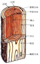

2021年
問題97 建築材料と部材の性質に関する次の記述のうち，最も不適当なものはどれか．
（1）スランプ試験によるスランプ値が大きいほど，コンクリートの流動性が高いと評価できる．
（2）CLTは，挽ひき板を繊維方向が直交するように積層した板材である．
（3）AE剤は，モルタルやコンクリートの中に多数の微小な空気泡を均一に分布させるために用いる．
（4）鋼材の引張試験において，破断したときのひずみ度を伸びという．
（5）木材の強度は，幹の半径方向（放射軸），年輪の接線方向，繊維方向（幹軸）の順に大きくなる．
2021年
問題97 正解（5） 頻出度AA
木材の強度は，繊維方向＞半径方向＞接線方向である．
木材の繊維方向などは2021-97-1図参照．
2021-97-1図 樹木の断面と名称

出典 株式会社スペースウッド
https://www.hisaka.co.jp/phe/workbook/first_period02.html
-(1) スランプ試験（2021-97-2図）．
2021-97-2図 コンクリートのスランプ試験
出典 ヒダ株式会社
http://www.hida-group.co.jp/c_2/p_47.html を基に作成
工事では，コンクリートの製品ごとに定められたスランプ規格値±現場で行うスランプ試験許容範囲のコンクリートを使用する．
-(2) CLTなど集成材，合板の種類は2021-97-3図参照．
2021-97-3図 集成材，合板などの種類
出典 藤寿産業株式会社
https://toju.co.jp/feature02 を基に作成
-(3) AE剤によって導入された微細な空気泡は，エントレインドエア（entrained air）と呼ばれ，この空気泡は，フレッシュコンクリート中ではボールベアリングのように働き，ワーカビリティを向上させる．又，冬期内部水分が凍結した際の逃げ場となって，耐凍結融解性を著しく増大させる．
-(4) 伸び（破断伸び）は，破断後の永久伸びを試料の元の長さ（原評点距離）に対して百分率で表した値と定義され，材料の延性や粘り強さを示す指標の一つである．一般的なSS400の鋼材で17〜23％．